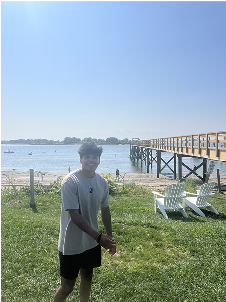

Home Page
World Class Boxers


If you're thinking of starting to box, you definitely should give it a try, there are many things to consider when thinking of training that I will go over. Firstly, my name is Mateo Geringer. I have been boxing since I was 18 years old starting in the middle of my senior year, which some may consider late, but I have developed fast as have many world champions that started even later than I have.
Yes, many people won't reach the level those champions achieved, but it shows that anything can happen and you shouldn't count yourself out. My love for boxing started from seeing YouTubers picking the sport up — people who had no prior experience but gave it a try anyway. It inspired me to start training, along with the fact that I already liked combat sports.
Boxing taught me how to work harder than I ever had before, and helped me develop a huge amount of respect for combat sport athletes. Below are some links I recommend checking out — they cover professional boxers and the full story of YouTube boxing that has now developed tremendously.
Links I recommend: 7 Boxers Who Started Late and How They Became Champions, The Entire History of YouTube Boxing, Why you should start boxing – Grand Valley Lanthorn

Click to expand:
- Boxing gyms are like regular gyms in the sense of having a great community and attitude of helping each other improve, so you shouldn't fear being judged or not being welcomed. As long as you go in open minded, humble and ready to learn you will be respected.
- Boxing if you end up liking it will keep you invested in your fitness and health. For me I've always enjoyed working out at the gym and playing sports throughout high school, but it was only when I started boxing that my interest in fitness skyrocketed.
- While I may not like or watch some of the YouTubers that have picked up boxing I recognize that people are interested in boxing more than ever because of the eyes they bring to the sport. An important thing to note is these "famous" creators have money and the time to dedicate to training that many of us do not. They can afford the best nutritionists, coaches, etc, so understand that and don't be so hard on yourself.
- Fear of getting hit is normal — it is not in our nature to get hit in the face constantly and stand in a ring with someone. Only time and boxing more frequently will slowly reduce the nerves/constant flinching and make you more comfortable. Just like anything you need to practice in order to get better.
- Always respect whoever gets in the ring no matter how good or bad they are. Deciding to fight is a major risk because it could end in disaster for anyone. Forget the embarrassment from possibly losing or getting knocked out — people have died in a boxing ring or because of a fight. That's why when its all said and done shake your opponents hand and have good sportsmanship.
Below I have provided some videos of me hitting the bag and mitts in gyms with various trainers that I work with. These short clips give an insight into some good bag/mitt work. You can see in the back of one of the videos that there are lots of other people around all sorts of ages. In that particular video I am taking a basic boxing class at a title gym where I sometimes train and teach occasionally. Title gyms are a chain and can be found all over the United States — they are a great place to start out.